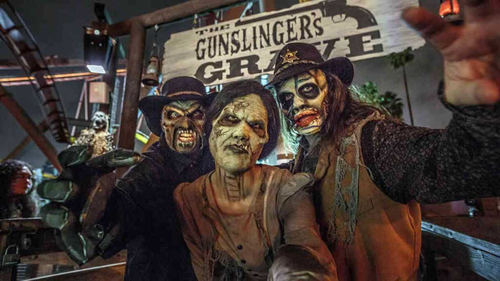
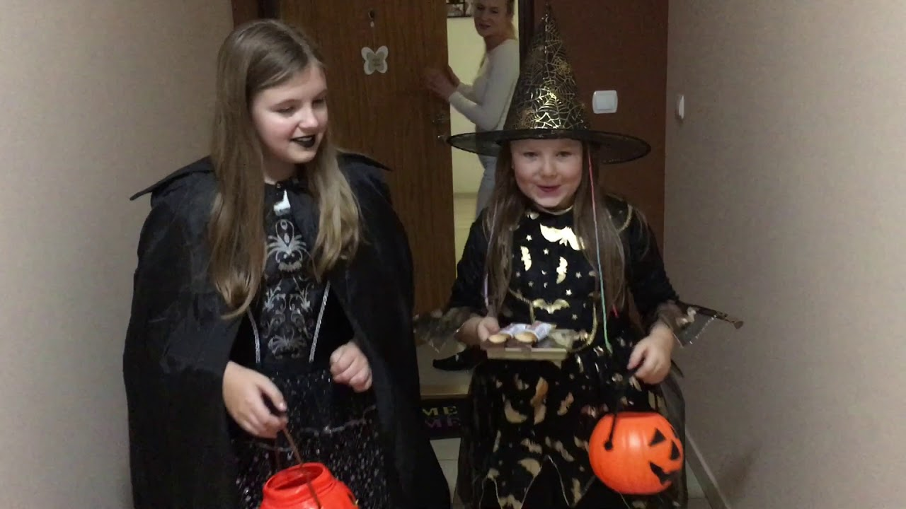
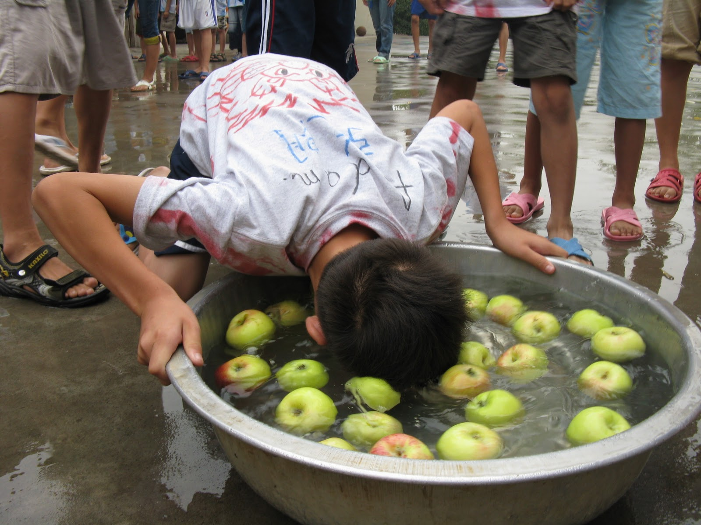
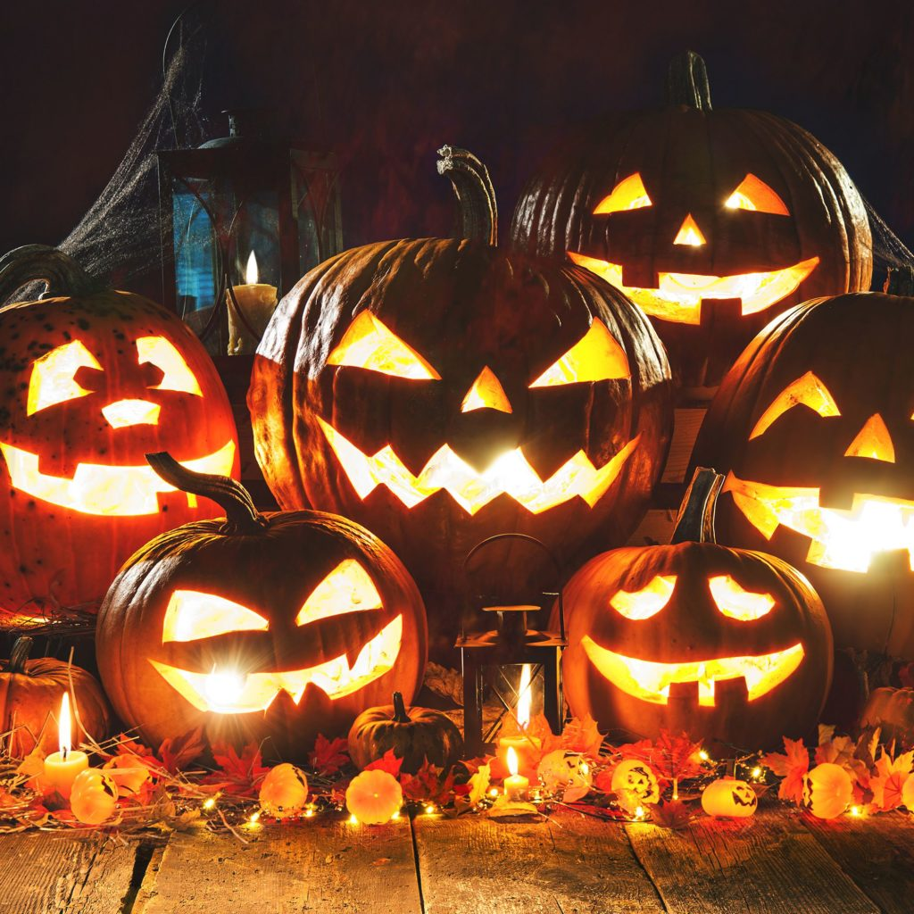

Halloween – zwyczaj związany z maskaradą, obchodzony w wielu krajach w wieczór 31 października. Odniesienia do Halloween są często widoczne w kulturze popularnej, głównie amerykańskiej. Halloween najhuczniej jest obchodzony w Stanach Zjednoczonych, Kanadzie, Irlandii, Australii i Wielkiej Brytanii. Mimo że dzień nie jest świętem urzędowym, cieszy się po święcie Bożego Narodzenia największą popularnością. Święto Halloween w Polsce pojawiło się w latach 90. XX w. Głównym symbolem święta jest wydrążona i podświetlona od środka dynia z wyszczerbionymi zębami. Inne popularne motywy to duchy, demony, zombie, wampiry, czarownice, trupie czaszki, nietoperze, czarne koty, pajęczyny, Wilkołaki itp.
Nazwa Halloween jest najprawdopodobniej skróconym All Hallows' E’en, czyli wcześniejszym „All Hallows' Eve” – wigilia Wszystkich Świętych.
Scary farm 
Cukierek albo psikus 
Apple bobbing 
Jack-o'-lantern 